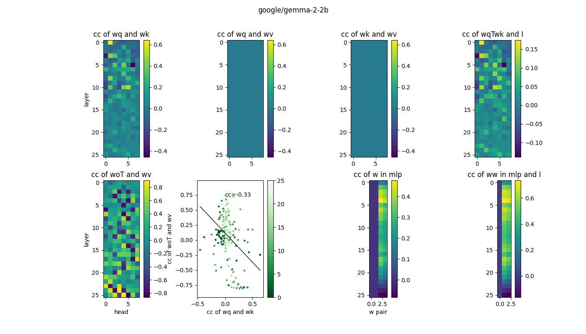
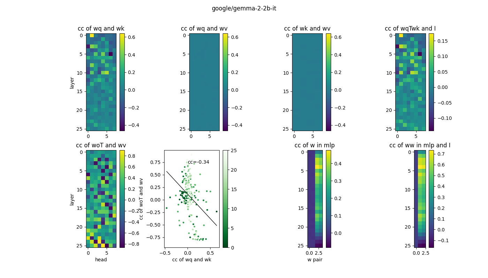
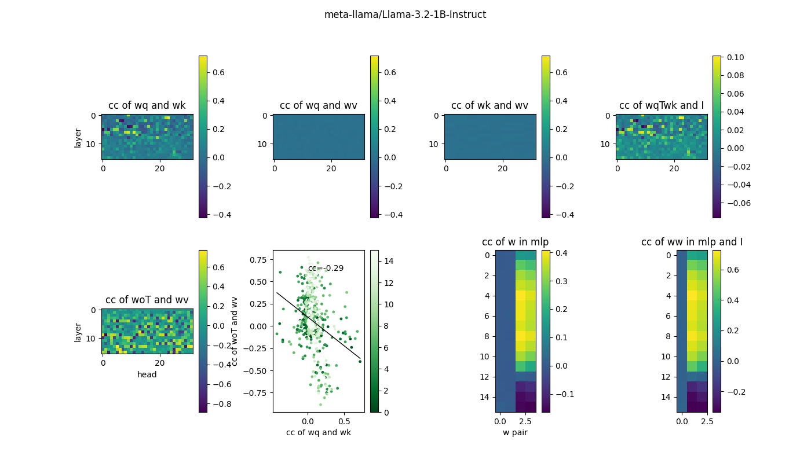
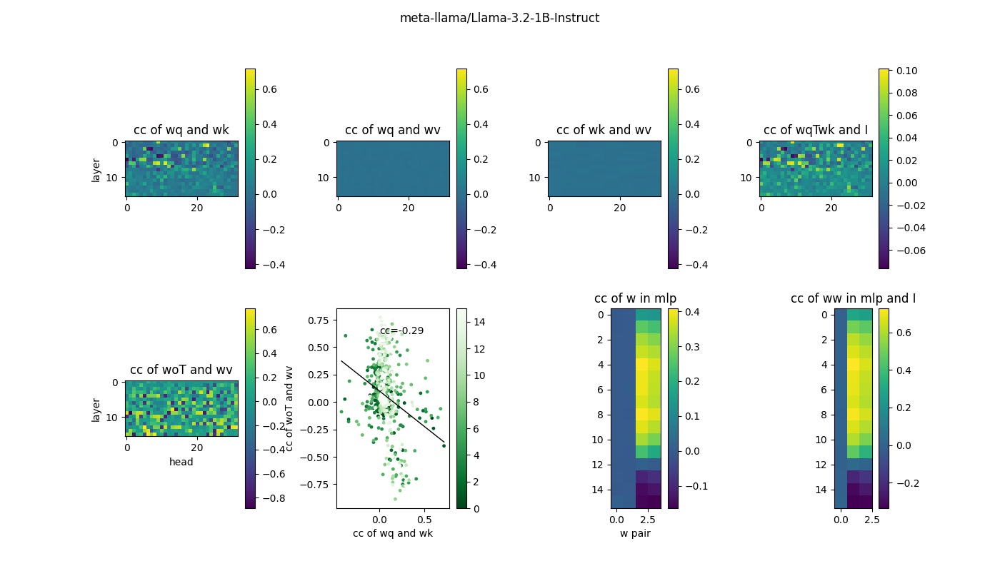
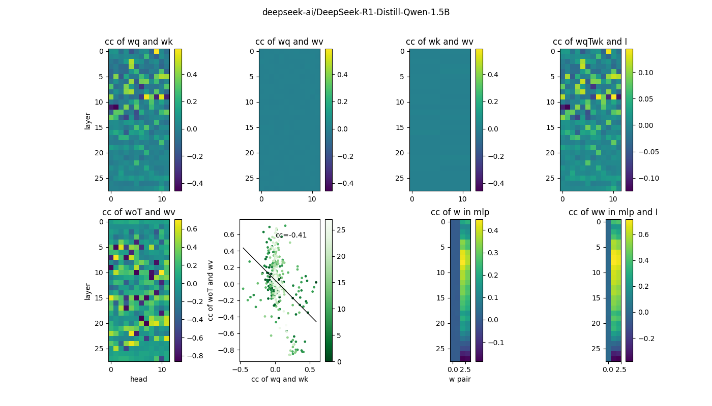
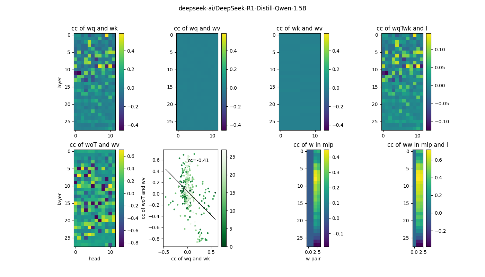

Correlations in weights in pretrained small language models
Man Yi Yim
Abstract
Motivation:
- Multiple studies reported that pruning certain layers, or even entire blocks, in a pretrained LLM has a minimal impact on its performance, suggesting redundancy within their model architectures.
- Could we identify the redundancy within their model architectures by looking into the weights or correlation of weights?
- Could we better understand the weights in different attention heads, along the layers, in attention and MLP layers?
Theory:
- The resulting embedding in the attention layer is a function of the product of W_q and W_k, as well as the product of W_o and W_v.
- The MLP layer has the gated W_g and up W_u projection in parallel and then the two streams are combined with elementwise multiplication and fed into down W_d projection.
Methods:
For each model, we computed the correlation coefficient (cc) of the followings in each layer:
- W_q and W_k in different attention heads
- W_q and W_v in different attention heads
- W_k and W_v in different attention heads
- W_q^T·W_k and I in different attention heads
- W_o^T and W_v in different attention heads
- cc of W_o^T and W_v vs cc of W_q and W_k (M5 vs M1)
- W_g and W_u, W_g and W_d^T, W_u and W_d^T, W_u^+ and W_d
- W_d·W_g and I, W_d·W_u and I, W_d·(W_u^+)^T and I
Observations:
- All the small pretrained language models we studied (ranging from 0.5B to 8B, base and instruct, text-only and multimodal) have similar correlation structures in both attention and MLP layers.
- W_q and W_k have more significant correlation in the early layers.
- W_o^T and W_v have more significant correlation in the later layers.
- cc of W_o^T and W_v vs cc of W_q and W_k are negatively correlated.
- W_u and W_d^T show positive correlation in the early layers and negative correlation in the later layers.
- W_d·W_u is close to I in some intermediate layers.
Future plans:
- Study how the correlation structures evolve during training by looking into different checkpoints
- Examine the changes of the correlation structures upon fine-tuning
- Explore the functional significance of layers and attention heads with different correlations by pruning techniques
- Investigate the correlation structures in larger language models
Results:


 



 

My notes